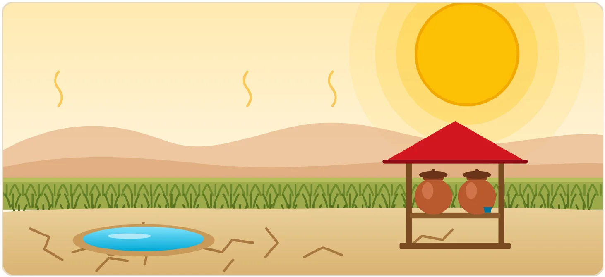
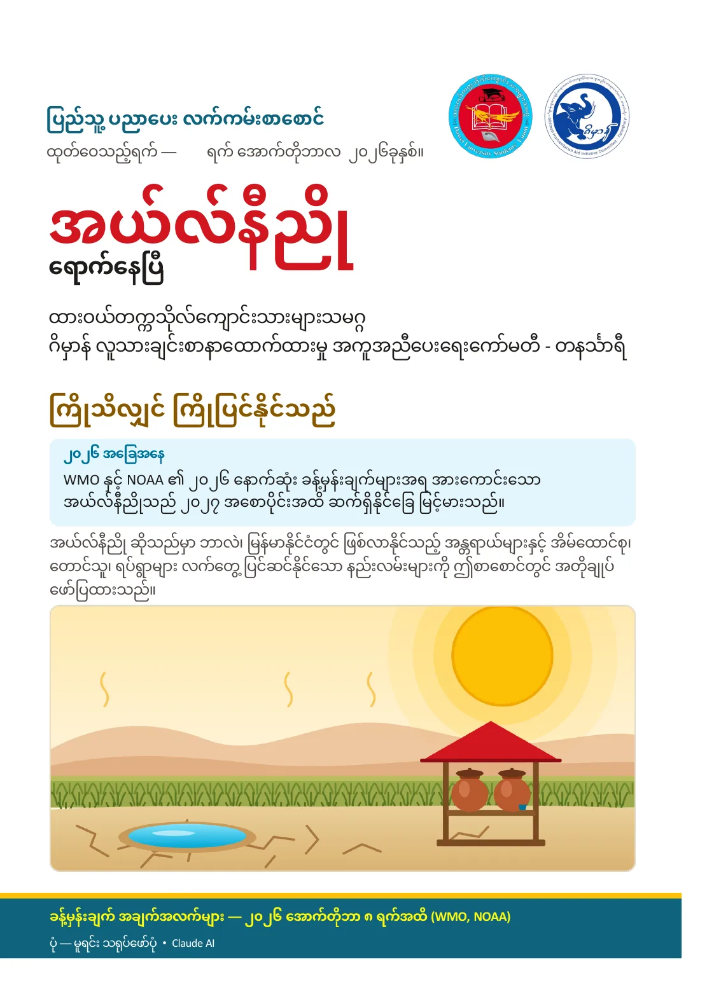
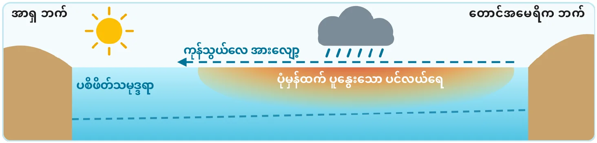
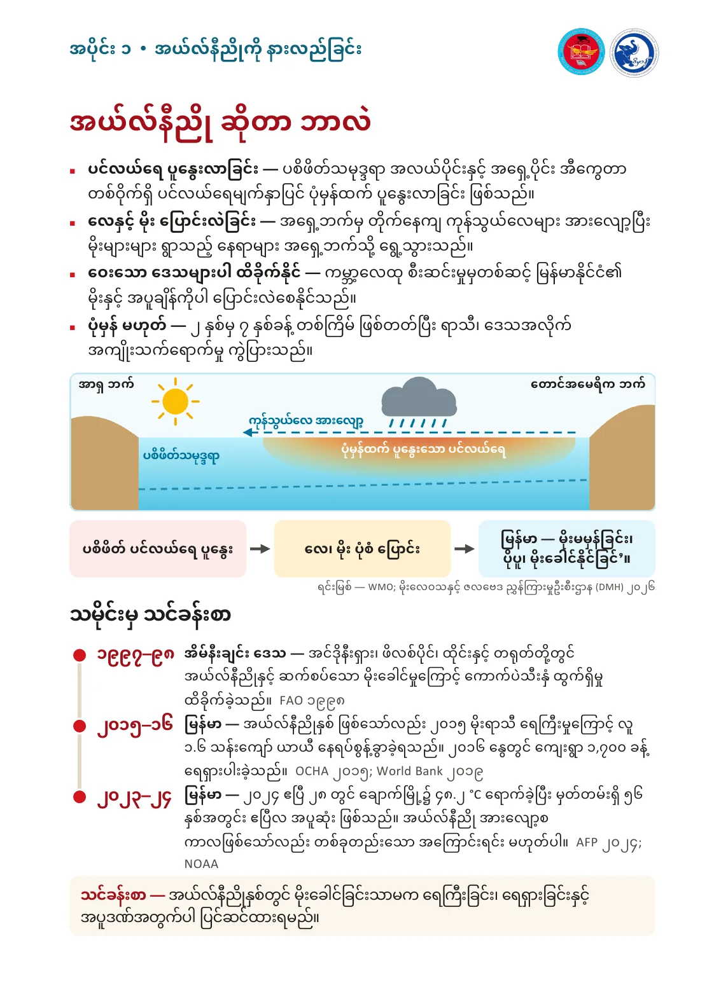
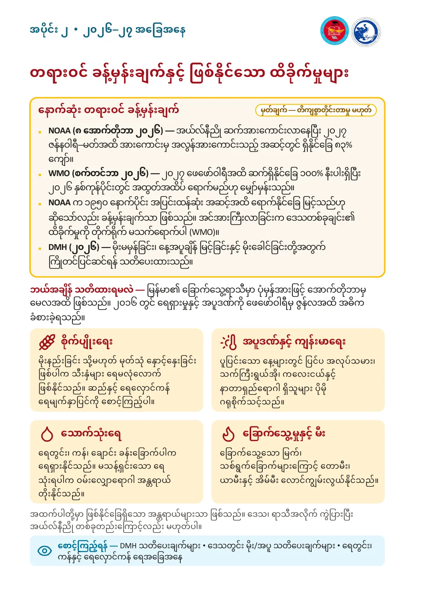
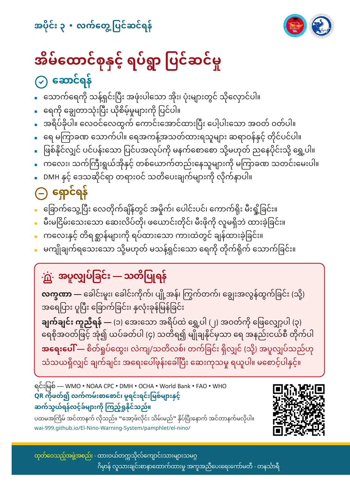

ပြည်သူ့ ပညာပေး လက်ကမ်းစာစောင် · public education leaflet
အယ်လ်နီညို El Niño
ကြိုသိလျှင် ကြိုပြင်နိုင်သည် — လက်ကမ်းစာစောင် အပြည့်အစုံ၊ မူရင်း ရင်းမြစ်များနှင့် ဆက်သွယ်ရန် လင့်ခ်များ
- ထုတ်ဝေသူ (စာစောင်ပါအတိုင်း)
- ထားဝယ်တက္ကသိုလ်ကျောင်းသားများသမဂ္ဂ
ဂိမှာန် လူသားချင်းစာနာထောက်ထားမှု အကူအညီပေးရေးကော်မတီ - တနင်္သာရီ - ထုတ်ဝေချိန်
- အောက်တိုဘာလ ၂၀၂၆ (ပုံနှိပ်မူတွင် ရက်ကွက်လပ်ထားသည်)
- ထုတ်ဝေမှု
- 2026-10 · edition 1 (single-QR print)
- ခန့်မှန်းချက် အချက်အလက်
- ၈ အောက်တိုဘာ ၂၀၂၆ အထိ (WMO, NOAA)
- ရင်းမြစ် နောက်ဆုံး စစ်ဆေးသည့်ရက်
- ၁၄ အောက်တိုဘာ ၂၀၂၆
အော့ဖ်လိုင်း ဖတ်ရှုခြင်း · offline reading
JavaScript မဖွင့်ထားပါက အော့ဖ်လိုင်း သိမ်း၍ မရပါ — PDF ကို ဒေါင်းလုဒ်လုပ်ပါ။
ဘယ်လို အလုပ်လုပ်သလဲ · how it works
- QR တွင် လင့်ခ် တစ်ခုသာ ပါသည်။ PDF ကို QR ထဲတွင် မသိမ်းထားပါ — ပထမအကြိမ် ဖွင့်ရန် အင်တာနက် လိုအပ်သည်။
- “အော့ဖ်လိုင်း သိမ်းမည်” ကို နှိပ်ပြီး “သိမ်းပြီးပါပြီ” ပေါ်လာမှသာ ဤဖုန်း၊ ဤဘရောက်ဇာတွင် အင်တာနက်မရှိဘဲ ပြန်ဖတ်နိုင်သည် (စာသား၊ PDF၊ ရင်းမြစ်စာရင်း၊ ပုံများ)။
- Facebook နှင့် မူရင်းရင်းမြစ် ဝဘ်ဆိုက်များကို မသိမ်းပါ — ၎င်းတို့အတွက် အင်တာနက် လိုသည်။
- ဖုန်း၏ သိုလှောင်ခန်း ပြည့်လျှင် (သို့) ဘရောက်ဇာ ဒေတာ ရှင်းလင်းလျှင် မိတ္တူ ပျက်နိုင်သည်။ iPhone တွင် ကြာရှည် မဖွင့်ပါက ဖျက်ခံရနိုင်၍ “Add to Home Screen” ပြုလုပ်ထားပါ။
- အင်တာနက် မရှိသော နေရာတွင် ပေးဝေရန် — PDF ဖိုင် (သို့) offline-pamphlet.zip ကို ဖုန်းအချင်းချင်း တိုက်ရိုက် ပို့ပါ။
The QR holds only this web address — not the PDF. The first visit needs internet. After you tap “Save for offline” and see the confirmation, this browser on this device can reopen the leaflet, PDF and bibliography without internet. Facebook and external source sites are never cached. Storage can be cleared by the browser or device; on iPhone, add the page to the Home Screen to reduce eviction.
လက်ကမ်းစာစောင် ဖတ်ရန် · Read the leaflet
ပုံနှိပ်မူ စာမျက်နှာ ၄ မျက်နှာကို ဖတ်ရှုရန် အစီအစဉ်အတိုင်း — မျက်နှာဖုံး၊ အတွင်း ဘယ်/ညာ၊ နောက်ကျော။ [S01] ကဲ့သို့ အမှတ်အသားကို နှိပ်ပါက မူရင်း ရင်းမြစ်သို့ ရောက်မည်။
၁မျက်နှာဖုံး · Front cover
ပြည်သူ့ ပညာပေး လက်ကမ်းစာစောင်
ထုတ်ဝေသည့်ရက် — ______ ရက် အောက်တိုဘာလ ၂၀၂၆ခုနှစ်။
အယ်လ်နီညိုရောက်နေပြီ[S01][S02][S20]
ထားဝယ်တက္ကသိုလ်ကျောင်းသားများသမဂ္ဂ
ဂိမှာန် လူသားချင်းစာနာထောက်ထားမှု အကူအညီပေးရေးကော်မတီ - တနင်္သာရီ
ကြိုသိလျှင် ကြိုပြင်နိုင်သည်
အယ်လ်နီညို ဆိုသည်မှာ ဘာလဲ၊ မြန်မာနိုင်ငံတွင် ဖြစ်လာနိုင်သည့် အန္တရာယ်များနှင့် အိမ်ထောင်စု၊ တောင်သူ၊ ရပ်ရွာများ လက်တွေ့ ပြင်ဆင်နိုင်သော နည်းလမ်းများကို ဤစာစောင်တွင် အတိုချုပ် ဖော်ပြထားသည်။

ခန့်မှန်းချက် အချက်အလက်များ — ၂၀၂၆ အောက်တိုဘာ ၈ ရက်အထိ (WMO, NOAA)[S01][S20]
ပုံ — မူရင်း သရုပ်ဖော်ပုံ • Claude AI
မူရင်း စာမျက်နှာပုံ ကြည့်ရန် (facsimile)

ပုံကို နှိပ်လျှင် အရွယ်ကြီးဖြင့် ဖွင့်ပြီး လက်ချောင်းဖြင့် ချဲ့ကြည့်နိုင်သည်။
၂အတွင်း ဘယ်ဘက် · Inside left
အပိုင်း ၁ • အယ်လ်နီညိုကို နားလည်ခြင်း
အယ်လ်နီညို ဆိုတာ ဘာလဲ
- ပင်လယ်ရေ ပူနွေးလာခြင်း — ပစိဖိတ်သမုဒ္ဒရာ အလယ်ပိုင်းနှင့် အရှေ့ပိုင်း အီကွေတာ တစ်ဝိုက်ရှိ ပင်လယ်ရေမျက်နှာပြင် ပုံမှန်ထက် ပူနွေးလာခြင်း ဖြစ်သည်။[S04]
- လေနှင့် မိုး ပြောင်းလဲခြင်း — အရှေ့ဘက်မှ တိုက်နေကျ ကုန်သွယ်လေများ အားလျော့ပြီး မိုးများများ ရွာသည့် နေရာများ အရှေ့ဘက်သို့ ရွေ့သွားသည်။[S04][S01]
- ဝေးသော ဒေသများပါ ထိခိုက်နိုင် — ကမ္ဘာ့လေထု စီးဆင်းမှုမှတစ်ဆင့် မြန်မာနိုင်ငံ၏ မိုးနှင့် အပူချိန်ကိုပါ ပြောင်းလဲစေနိုင်သည်။[S05][S04]
- ပုံမှန် မဟုတ် — ၂ နှစ်မှ ၇ နှစ်ခန့် တစ်ကြိမ် ဖြစ်တတ်ပြီး ရာသီ၊ ဒေသအလိုက် အကျိုးသက်ရောက်မှု ကွဲပြားသည်။[S04]

- ပစိဖိတ် ပင်လယ်ရေ ပူနွေး
- လေ၊ မိုး ပုံစံ ပြောင်း
- မြန်မာ — မိုးမမှန်ခြင်း၊ ပိုပူ၊ မိုးခေါင်နိုင်ခြင်’။
ရင်းမြစ် — WMO; မိုးလေဝသနှင့် ဇလဗေဒ ညွှန်ကြားမှုဦးစီးဌာန (DMH) ၂၀၂၆
သမိုင်းမှ သင်ခန်းစာ
- ၁၉၉၇–၉၈
အိမ်နီးချင်း ဒေသ — အင်ဒိုနီးရှား၊ ဖိလစ်ပိုင်၊ ထိုင်းနှင့် တရုတ်တို့တွင် အယ်လ်နီညိုနှင့် ဆက်စပ်သော မိုးခေါင်မှုကြောင့် ကောက်ပဲသီးနှံ ထွက်ရှိမှု ထိခိုက်ခဲ့သည်။[S08][S14] FAO ၁၉၉၈
- ၂၀၁၅–၁၆
မြန်မာ — အယ်လ်နီညိုနှစ် ဖြစ်သော်လည်း ၂၀၁၅ မိုးရာသီ ရေကြီးမှုကြောင့် လူ ၁.၆ သန်းကျော် ယာယီ နေရပ်စွန့်ခွာခဲ့ရသည်။[S09][S10] ၂၀၁၆ နွေတွင် ကျေးရွာ ၁,၇၀၀ ခန့် ရေရှားပါးခဲ့သည်။[S11] OCHA ၂၀၁၅; World Bank ၂၀၁၉
- ၂၀၂၃–၂၄
မြန်မာ — ၂၀၂၄ ဧပြီ ၂၈ တွင် ချောက်မြို့၌ ၄၈.၂ °C ရောက်ခဲ့ပြီး မှတ်တမ်းရှိ ၅၆ နှစ်အတွင်း ဧပြီလ အပူဆုံး ဖြစ်သည်။[S12] အယ်လ်နီညို အားလျော့စ ကာလဖြစ်သော်လည်း တစ်ခုတည်းသော အကြောင်းရင်း မဟုတ်ပါ။[S13] AFP ၂၀၂၄; NOAA
မူရင်း စာမျက်နှာပုံ ကြည့်ရန် (facsimile)

ပုံကို နှိပ်လျှင် အရွယ်ကြီးဖြင့် ဖွင့်ပြီး လက်ချောင်းဖြင့် ချဲ့ကြည့်နိုင်သည်။
၃အတွင်း ညာဘက် · Inside right
အပိုင်း ၂ • ၂၀၂၆–၂၇ အခြေအနေ
တရားဝင် ခန့်မှန်းချက်နှင့် ဖြစ်နိုင်သော ထိခိုက်မှုများ
နောက်ဆုံး တရားဝင် ခန့်မှန်းချက်
မှတ်ချက် — တိကျစွာတိုင်းတာမှု မဟုတ်- NOAA (၈ အောက်တိုဘာ ၂၀၂၆) — အယ်လ်နီညို ဆက်အားကောင်းလာနေပြီး ၂၀၂၇ ဇန်နဝါရီ–မတ်အထိ အားကောင်းမှ အလွန်အားကောင်းသည့် အဆင့်တွင် ရှိနိုင်ခြေ ၈၃% ကျော်။[S01]
- WMO (စက်တင်ဘာ ၂၀၂၆) — ၂၀၂၇ ဖေဖော်ဝါရီအထိ ဆက်ရှိနိုင်ခြေ ၁၀၀% နီးပါးရှိပြီး ၂၀၂၆ နှစ်ကုန်ပိုင်းတွင် အထွတ်အထိပ် ရောက်မည်ဟု မျှော်မှန်းသည်။[S02][S03][S20]ပိုသစ်သော ထုတ်ပြန်ချက် ရှိ
- NOAA က ၁၉၅၀ နောက်ပိုင်း အပြင်းထန်ဆုံး အဆင့်အထိ ရောက်နိုင်ခြေ မြင့်သည်ဟု ဆိုသော်လည်း ခန့်မှန်းချက်သာ ဖြစ်သည်။[S01] အင်အားကြီးလာခြင်းက ဒေသတစ်ခုချင်း၏ ထိခိုက်မှုကို တိုက်ရိုက် မသက်ရောက်ပါ (WMO)။[S03][S01]ပြင်ဆင်ရန် လို · needs correction
- DMH (၂၀၂၆) — မိုးမမှန်ခြင်း၊ နေ့အပူချိန် မြင့်ခြင်းနှင့် မိုးခေါင်ခြင်းတို့အတွက် ကြိုတင်ပြင်ဆင်ရန် သတိပေးထားသည်။[S05][S06][S24]
ဘယ်အချိန် သတိထားရမလဲ — မြန်မာ၏ ခြောက်သွေ့ရာသီမှာ ပုံမှန်အားဖြင့် အောက်တိုဘာမှ မေလအထိ ဖြစ်သည်။[S07] ၂၀၁၆ တွင် ရေရှားမှုနှင့် အပူဒဏ်ကို ဖေဖော်ဝါရီမှ ဇွန်လအထိ အဓိက ခံစားခဲ့ရသည်။[S10]
စိုက်ပျိုးရေး
မိုးနည်းခြင်း သို့မဟုတ် မုတ်သုံ နှောင့်နှေးခြင်း ဖြစ်ပါက သီးနှံများ ရေမလုံလောက် ဖြစ်နိုင်သည်။ ဆည်နှင့် ရေလှောင်ကန် ရေမျက်နှာပြင်ကို စောင့်ကြည့်ပါ။[S05][S11]
အပူဒဏ်နှင့် ကျန်းမာရေး
ပူပြင်းသော နေ့များတွင် ပြင်ပ အလုပ်သမား၊ သက်ကြီးရွယ်အို၊ ကလေးငယ်နှင့် နာတာရှည်ရောဂါ ရှိသူများ ပိုမို ဂရုစိုက်သင့်သည်။[S15]
သောက်သုံးရေ
ရေတွင်း၊ ကန်၊ ချောင်း ခန်းခြောက်ပါက ရေရှားနိုင်သည်။ မသန့်ရှင်းသော ရေ သုံးရပါက ဝမ်းလျှောရောဂါ အန္တရာယ် တိုးနိုင်သည်။[S10][S11][S18]
ခြောက်သွေ့မှုနှင့် မီး
ခြောက်သွေ့သော မြက်၊ သစ်ရွက်ခြောက်များကြောင့် တောမီး၊ ယာမီးနှင့် အိမ်မီး လောင်ကျွမ်းလွယ်နိုင်သည်။[S10]
အထက်ပါတို့မှာ ဖြစ်နိုင်ခြေရှိသော အန္တရာယ်များသာ ဖြစ်သည်။ ဒေသ၊ ရာသီအလိုက် ကွဲပြားပြီး အယ်လ်နီညို တစ်ခုတည်းကြောင့်လည်း မဟုတ်ပါ။[S03]
စောင့်ကြည့်ရန် — DMH သတိပေးချက်များ • ဒေသတွင်း မိုး/အပူ သတိပေးချက်များ • ရေတွင်း၊ ကန်နှင့် ရေလှောင်ကန် ရေအခြေအနေ
မူရင်း စာမျက်နှာပုံ ကြည့်ရန် (facsimile)

ပုံကို နှိပ်လျှင် အရွယ်ကြီးဖြင့် ဖွင့်ပြီး လက်ချောင်းဖြင့် ချဲ့ကြည့်နိုင်သည်။
၄နောက်ကျော · Back cover
အပိုင်း ၃ • လက်တွေ့ပြင်ဆင်ရန်
အိမ်ထောင်စုနှင့် ရပ်ရွာ ပြင်ဆင်မှု
ဆောင်ရန်
- သောက်ရေကို သန့်ရှင်းပြီး အဖုံးပါသော အိုး၊ ပုံးများတွင် သိုလှောင်ပါ။[S18][S11]
- ရေကို ချွေတာသုံးပြီး ယိုစိမ့်မှုများကို ပြင်ပါ။[S18][S11]
- အရိပ်ခိုပါ။ လေဝင်လေထွက် ကောင်းအောင်ထားပြီး ပေါ့ပါးသော အဝတ် ဝတ်ပါ။[S15][S23]
- ရေ မကြာခဏ သောက်ပါ။ ရေအကန့်အသတ်ထားရသူများ ဆရာဝန်နှင့် တိုင်ပင်ပါ။[S15][S23]
- ဖြစ်နိုင်လျှင် ပင်ပန်းသော ပြင်ပအလုပ်ကို မနက်စောစော သို့မဟုတ် ညနေပိုင်းသို့ ရွှေ့ပါ။[S15][S23]
- ကလေး၊ သက်ကြီးရွယ်အိုနှင့် တစ်ယောက်တည်းနေသူများကို မကြာခဏ သတင်းမေးပါ။[S15][S23]
- DMH နှင့် ဒေသဆိုင်ရာ တရားဝင် သတိပေးချက်များကို လိုက်နာပါ။[S24][S05]
ရှောင်ရန်
- ခြောက်သွေ့ပြီး လေတိုက်ချိန်တွင် အမှိုက်၊ ပေါင်းပင်၊ ကောက်ရိုး မီးရှို့ခြင်း။[S10]
- မီးမငြိမ်းသေးသော ဆေးလိပ်တို၊ ဖယောင်းတိုင်၊ မီးဖိုကို လူမရှိဘဲ ထားခဲ့ခြင်း။[S10]
- ကလေးနှင့် တိရစ္ဆာန်များကို ရပ်ထားသော ကားထဲတွင် ချန်ထားခဲ့ခြင်း။[S15]
- မကျိုချက်ရသေးသော သို့မဟုတ် မသန့်ရှင်းသော ရေကို တိုက်ရိုက် သောက်ခြင်း။[S18]
အပူလျှပ်ခြင်း — သတိပြုရန်
လက္ခဏာ — ခေါင်းမူး၊ ခေါင်းကိုက်၊ ပျို့အန်၊ ကြွက်တက်၊ ချွေးအလွန်ထွက်ခြင်း (သို့) အရေပြား ပူပြီး ခြောက်ခြင်း၊ နှလုံးခုန်မြန်ခြင်း[S16][S17][S22]
ချက်ချင်း ကူညီရန် — (၁) အေးသော အရိပ်ထဲ ရွှေ့ပါ (၂) အဝတ်ကို ဖြေလျှော့ပါ (၃) ရေစိုအဝတ်ဖြင့် အုံ၍ ယပ်ခတ်ပါ (၄) သတိရ၍ မျိုချနိုင်မှသာ ရေ အနည်းငယ်စီ တိုက်ပါ[S16][S17]
အရေးပေါ် — စိတ်ရှုပ်ထွေး၊ လဲကျ/သတိလစ်၊ တက်ခြင်း ရှိလျှင် (သို့) အပူလျှပ်သည်ဟု သံသယရှိလျှင် ချက်ချင်း အရေးပေါ်ဖုန်းခေါ်ပြီး ဆေးကုသမှု ရယူပါ။ မစောင့်ပါနှင့်။[S15][S17][S22]
ရင်းမြစ် — WMO • NOAA CPC • DMH • OCHA • World Bank • FAO • WHO
QR ကိုဖတ်၍ လက်ကမ်းစာစောင်၊ မူရင်းရင်းမြစ်များနှင့် ဆက်သွယ်ရန်လင့်ခ်များကို ကြည့်ရှုနိုင်သည်။
ပထမအကြိမ် အင်တာနက် လိုသည်။ “အော့ဖ်လိုင်း သိမ်းမည်” နှိပ်ပြီးနောက် အင်တာနက်မလိုပါ။
ထုတ်ဝေသည့်အဖွဲ့အစည်း - ထားဝယ်တက္ကသိုလ်ကျောင်းသားများသမဂ္ဂ
ဂိမှာန် လူသားချင်းစာနာထောက်ထားမှု အကူအညီပေးရေးကော်မတီ - တနင်္သာရီ
မူရင်း စာမျက်နှာပုံ ကြည့်ရန် (facsimile)

ပုံကို နှိပ်လျှင် အရွယ်ကြီးဖြင့် ဖွင့်ပြီး လက်ချောင်းဖြင့် ချဲ့ကြည့်နိုင်သည်။
မူရင်း ရင်းမြစ်များ · Original sources
ရင်းမြစ် ၂၃ ခု — တစ်ခုချင်းစီကို ၁၄ အောက်တိုဘာ ၂၀၂၆ တွင် ဖွင့်ကြည့်ပြီး ကိုးကားထားသော စာသား ပါ/မပါ စစ်ဆေးထားသည်။ ဝဘ်ဆိုက် ဖွင့်လို့ရခြင်း သက်သက်က သိပ္ပံနည်းကျ မှန်ကန်ကြောင်း မပြပါ။
ENSO ခန့်မှန်းချက် · ENSO outlook
-
S01စစ်ဆေးပြီး · Verified
El Niño/Southern Oscillation (ENSO) Diagnostic Discussion — 8 October 2026
“El Niño continues to strengthen, with a strong-to-very strong El Niño likely through January-March 2027 (remaining greater than an 83% chance).”
ခန့်မှန်းချက်သာ ဖြစ်သည်။ နောက်ထုတ်ပြန်ချက် — ၁၂ နိုဝင်ဘာ ၂၀၂၆။
Probabilities, not certainties. Next discussion: 12 Nov 2026. The archive URL is permanent; the alternate URL always shows the newest issue.
https://www.cpc.ncep.noaa.gov/products/analysis_monitoring/enso_disc_oct2026/ensodisc.shtml
အခြား လင့်ခ် (alternate): https://www.cpc.ncep.noaa.gov/products/analysis_monitoring/enso_advisory/ensodisc.shtml
-
S02စစ်ဆေးပြီး — ပိုသစ်သော ထုတ်ပြန်ချက် ရှိ · Verified (dated; a newer statement exists)
El Niño/La Niña Update (August 2026)
“Forecasts indicate further strengthening of El Niño in the coming months, with the event forecast to reach very strong intensity before peaking towards the end of the year.”
၈ အောက်တိုဘာ ၂၀၂၆ WMO ထုတ်ပြန်ချက် (S20) က ပိုသစ်ပြီး အချက်အလက် ကိုက်ညီသည်။
Superseded for timing by the 8 Oct 2026 WMO release (S20), which is consistent (peak in December).
https://wmo.int/resources/publication-series/el-ninola-nina-updates/august-2026
-
S03စစ်ဆေးပြီး — ပိုသစ်သော ထုတ်ပြန်ချက် ရှိ · Verified (dated; a newer statement exists)
El Niño set to become very strong, raising risks of extreme weather into 2027 (press release)
“However, the strength of an El Niño event alone does not determine how severe its impacts will be in any individual country or region.”
WMO က "အလွန်အားကောင်း" ဟုသာ သုံးပြီး "Super" ဟု မသုံးပါ။
WMO says "very strong"; it does not use "super". Newer WMO statement: S20 (8 Oct 2026).
-
S04စစ်ဆေးပြီး · Verified
El Niño / La Niña Phenomena (theme page)
“El Niño is characterized by unusually warm ocean surface temperatures in the central and eastern Pacific.”
ရက်စွဲမပါသော ရှင်းလင်းချက် စာမျက်နှာ။
Undated explainer.
-
S20စစ်ဆေးပြီး · Verified
Sea-surface temperatures reflect strengthening El Niño (press release)
“WMO forecasts indicate a near-100 per cent likelihood that it will persist through February 2027, potentially being one of the strongest since at least 1950.”
စစ်ဆေးချိန်တွင် နောက်ဆုံး WMO ထုတ်ပြန်ချက်။
Newest WMO statement at the time of review; forecast peak in December 2026.
https://wmo.int/news/media-centre/sea-surface-temperatures-reflect-strengthening-el-nino
-
S21စစ်ဆေးပြီး · Verified
Global Seasonal Climate Update for October-November-December 2026
“The seasonal average Niño 3.4 SST anomaly is forecast to reach approximately +3.7°C during OND 2026, with the warming trend peaking around December 2026.”
The product behind S20.
မြန်မာ ခန့်မှန်းချက်/သတိပေးချက် · Myanmar forecasts & warnings
-
S05တစ်စိတ်တစ်ပိုင်း စစ်ဆေးပြီး · Partially verified
Myanmar weather bureau warns of impending strong El Nino event later this year
“Historically, El Nino cycles are directly linked to irregular or delayed monsoon rainfall patterns, an inflation of daytime temperatures, abnormal tropical storm activity, and severe droughts…”
DMH ၏ မူရင်းထုတ်ပြန်ချက်ကို တိုက်ရိုက် မဖတ်နိုင်ခဲ့ပါ — သတင်းဖော်ပြချက်ဖြစ်သည်။
Secondary report; DMH's own bulletin text was not available online (see S24).
-
S06တစ်စိတ်တစ်ပိုင်း စစ်ဆေးပြီး · Partially verified
Strong El Nino expected to develop by end of 2026: Myanmar
“The DMH has urged relevant sectors to make advance preparations for possible impacts…”
သတင်းဖော်ပြချက် ဖြစ်သည်။
Secondary report.
-
S07စစ်ဆေးပြီး · Verified
Myanmar warns of power cuts as El Nino heat strains grid
“…the coming dry season, which usually runs from October to May.”
ဤသတင်းတွင် အရာရှိများ "Super El Nino" ဟု သုံးသော်လည်း လက်ကမ်းစာစောင်တွင် မသုံးပါ။
The site blocks automated fetches (HTTP 403); verified in a browser-based fetch on 14 Oct 2026. Officials quoted there say "Super El Nino" — the leaflet does not repeat it.
-
S24ကိုးကားရန် လင့်ခ်သာ · Reference link only
အယ်နီညို/လာနီညာ (El Niño / La Niña) page
တရားဝင် DMH စာမျက်နှာ ဖြစ်သည်။ ၁၄ အောက်တိုဘာ ၂၀၂၆ တွင် ထုတ်ပြန်ချက် စာသား မတွေ့ရ၍ စောင့်ကြည့်ရန် လင့်ခ်အဖြစ်သာ ထည့်ထားသည်။
Official DMH page to monitor. When accessed on 14 Oct 2026 it showed no bulletin text, so it is listed for monitoring only and not used as evidence.
သမိုင်းဝင် ဖြစ်ရပ်များ · Historical events
-
S09စစ်ဆေးပြီး · Verified
Myanmar: Flood and Cyclone Snapshot (16 September 2015)
“…widespread flooding across 12 of the country's 14 states and regions, temporarily displacing over 1.6 million people.”
ရေကြီးမှုကို အယ်လ်နီညိုကြောင့်ဟု OCHA က မဆိုပါ။
The floods (with Cyclone Komen) co-occurred with the 2015-16 El Niño; OCHA does not attribute them to it. OCHA later gave ~1.7 million (S10).
-
S10စစ်ဆေးပြီး · Verified
Myanmar: Natural disaster risks and past events (as of 31 May 2016)
“According to the Myanmar Department of Meteorology and Hydrology, since mid-February 2016, Myanmar has been experiencing a severe impact of El Niño including extreme temperatures, unusual rainfall patterns, dry soil, high risk of fires and acute water shortages. The El Niño impact is expected to end in June 2016.”
Also gives ~1.7 million people temporarily displaced by the 2015 floods (later figure than S09).
-
S12တစ်စိတ်တစ်ပိုင်း စစ်ဆေးပြီး · Partially verified
Myanmar records hottest ever April temperature of 48.2°C
“The mercury hit 48.2°C in the town of Chauk in central Myanmar's Magway region on Sunday, according to a statement from the country's weather office, the highest temperature seen anywhere in Myanmar in April since records began 56 years ago.”
DMH ၏ မှတ်တမ်းစာမျက်နှာကို တိုက်ရိုက် မဖတ်နိုင်ခဲ့ပါ — AFP ဖော်ပြချက် ဖြစ်သည်။
Weather-office figure as reported by AFP; DMH's record page was not available. Sunday = 28 April 2024.
https://myanmar-now.org/en/news/myanmar-records-hottest-ever-april-temperature-of-48-2c/
-
S13စစ်ဆေးပြီး · Verified
ENSO Diagnostic Discussion — 9 May 2024
“ENSO Alert System Status: El Niño Advisory / La Niña Watch. Synopsis: A transition from El Niño to ENSO-neutral is likely in the next month.”
Establishes that April 2024 fell in the waning phase of the 2023-24 El Niño; it does not attribute the heat.
https://www.cpc.ncep.noaa.gov/products/analysis_monitoring/enso_disc_may2024/ensodisc.shtml
-
S14စစ်ဆေးပြီး · Verified
El Niño/La Niña Update (February 2016)
“…the 2015-16 El Niño is one of the strongest on record, comparable with the 1997-98 and 1982-83 events.”
Context for the timeline years (1997-98, 2015-16).
စိုက်ပျိုးရေးနှင့် ရေ · Agriculture & water
-
S08စစ်ဆေးပြီး · Verified
“Elsewhere in Asia, El Niño-related droughts have affected cereal production in Indonesia, China, the Philippines, and Thailand…”
ဒေသတွင်း ဖော်ပြချက်ဖြစ်ပြီး မြန်မာအတွက် ကိန်းဂဏန်း မပါပါ။
Regional statement; no Myanmar-specific figures.
-
S11စစ်ဆေးပြီး · Verified
Striking a Balance: Managing El Niño and La Niña in Myanmar's Agriculture
“For example, during the 2016 El Niño, 1,700 villages experienced water shortages.”
Original report PDF (World Bank, © 2019), hosted on ReliefWeb; World Bank repository handle given as alternate.
အခြား လင့်ခ် (alternate): https://hdl.handle.net/10986/31523
-
S18စစ်ဆေးပြီး · Verified
“Microbiologically contaminated drinking water can transmit diseases such as diarrhoea… covering water storage containers… may also reduce faecal contamination of water at the household level.”
Global fact sheet; not drought-specific.
https://www.who.int/news-room/fact-sheets/detail/drinking-water
ကျန်းမာရေးနှင့် အပူဒဏ် ဘေးကင်းရေး · Health & heat safety
-
S15စစ်ဆေးပြီး · Verified
“Never leave children or animals in parked vehicles for any amount of time… Avoid going outside and doing strenuous activity during the hottest time of day.”
Prevention advice and at-risk groups; not step-by-step first aid (see S16, S17, S22).
https://www.who.int/news-room/fact-sheets/detail/climate-change-heat-and-health
-
S16စစ်ဆေးပြီး · Verified
“…warning signs of heat-related illness—such as dizziness, nausea, muscle cramps, headache, heavy sweating, rapid heartbeat… move the person to a cool area, apply cold water, fan them, and call [emergency services] immediately.”
ပုံပါ အရေးပေါ်ဖုန်းနံပါတ်သည် မြန်မာနိုင်ငံ၏ နံပါတ် မဟုတ်ပါ။
Infographic adapted from Health Canada; the emergency number on it is not Myanmar's.
https://heathealth.info/resources/staying-healthy-in-the-heat/
-
S17စစ်ဆေးပြီး · Verified
Signs and symptoms of heat-related illness
“…give them small sips of fluids if conscious and able to swallow. Do not give medications unless prescribed.”
၎င်းပါ အရေးပေါ်ဖုန်း (000) သည် မြန်မာနိုင်ငံ၏ နံပါတ် မဟုတ်ပါ။
Australian state guidance; its emergency number (000) is NOT Myanmar's.
https://www.qld.gov.au/health/staying-healthy/environmental/heatsafe/signs-symptoms
-
S22စစ်ဆေးပြီး · Verified
Heat exhaustion and heatstroke
“Call 999 now if… a seizure or fit… loss of consciousness… Heatstroke is a medical emergency.”
999 သည် ယူကေ အရေးပေါ်ဖုန်း ဖြစ်ပြီး မြန်မာနိုင်ငံ၏ နံပါတ် မဟုတ်ပါ။
UK guidance; 999 is the UK emergency number, NOT Myanmar's.
-
S23စစ်ဆေးပြီး · Verified
How to keep cool and stay hydrated
“Drink water regularly throughout the day… unless your healthcare provider has advised you to limit your fluid intake.”
Supports the fluid-restriction advice.
https://www.qld.gov.au/health/staying-healthy/environmental/heatsafe/how-to-keep-cool
အချက် ↔ ရင်းမြစ် · Claim-to-source map (29/35 fully verified)
ID ကို နှိပ်လျှင် လက်ကမ်းစာစောင်ပါ စာသားသို့ ပြန်သွားမည်။ “ပြင်ဆင်ရန် လို” ဆိုသည်မှာ ရင်းမြစ်က ပုံနှိပ်စာသားကို အတိအကျ မထောက်ခံခြင်း ဖြစ်သည်။
| ID | စာမျက်နှာ | အချက် | အခြေအနေ | ရင်းမြစ် |
|---|---|---|---|---|
| C01 | ၁ | အယ်လ်နီညို ရောက်နေပြီEl Niño is under way (headline) NOAA: El Niño Advisory in force; WMO: "firmly established". |
စစ်ဆေးပြီး | S01 S02 S20 |
| C02 | ၁ | အားကောင်းသော အယ်လ်နီညို ၂၀၂၇ အစောပိုင်းအထိ ဆက်ရှိနိုင်ခြေ မြင့်Strong El Niño likely to last into early 2027 NOAA >83% strong-to-very strong through Jan-Mar 2027; WMO near-100% persistence through Feb 2027. |
စစ်ဆေးပြီး | S01 S20 |
| C03 | ၁ | ခန့်မှန်းချက် အချက်အလက်များ — ၈ အောက်တိုဘာ ၂၀၂၆ အထိForecast data as of 8 Oct 2026 (WMO, NOAA) Both agencies issued on 8 Oct 2026. Note: Panel 3 cites the September WMO statement, not the 8 Oct one (see C16). |
စစ်ဆေးပြီး | S01 S20 |
| C04 | ၂ | ပစိဖိတ် အလယ်/အရှေ့ပိုင်း ပင်လယ်ရေ ပူနွေးခြင်းWarmer central/eastern equatorial Pacific | စစ်ဆေးပြီး | S04 |
| C05 | ၂ | ကုန်သွယ်လေ အားလျော့ပြီး မိုး အရှေ့ဘက်ရွေ့Trade winds weaken; rainfall shifts east | စစ်ဆေးပြီး | S04 S01 |
| C06 | ၂ | မြန်မာ၏ မိုးနှင့် အပူချိန်ကိုပါ ပြောင်းလဲစေနိုင်Can change Myanmar's rain and temperature DMH statement known via news reports (S05). |
တစ်စိတ်တစ်ပိုင်း စစ်ဆေးပြီး | S05 S04 |
| C07 | ၂ | ၂–၇ နှစ်ခန့် တစ်ကြိမ်၊ အကျိုးသက်ရောက်မှု ကွဲပြားRecurs every ~2-7 years; impacts vary | စစ်ဆေးပြီး | S04 |
| C08 | ၂ | ပူနွေးမှု → လေ/မိုး ပြောင်း → မြန်မာ မိုးမမှန်၊ ပိုပူ၊ မိုးခေါင်နိုင်Flow: Pacific warming → wind/rain change → Myanmar irregular rain, hotter, possible drought Possible, not certain, outcomes. Typo in print: "ခြင်’။" (stray apostrophe, missing visarga) — see SOURCE_AUDIT.md. |
တစ်စိတ်တစ်ပိုင်း စစ်ဆေးပြီး | S04 S05 |
| C09 | ၂ | ၁၉၉၇–၉၈ အိမ်နီးချင်းနိုင်ငံများ ကောက်ပဲသီးနှံ ထိခိုက်1997-98: El Niño-related drought hit cereal output in Indonesia, Philippines, Thailand, China | စစ်ဆေးပြီး | S08 S14 |
| C10 | ၂ | ၂၀၁၅ ရေကြီးမှု — လူ ၁.၆ သန်းကျော် ယာယီ နေရပ်စွန့်ခွာ2015 floods: >1.6 million temporarily displaced Co-occurred with El Niño; not attributed to it (the leaflet words this correctly). |
စစ်ဆေးပြီး | S09 S10 |
| C11 | ၂ | ၂၀၁၆ နွေ — ကျေးရွာ ၁,၇၀၀ ခန့် ရေရှား2016: about 1,700 villages short of water | စစ်ဆေးပြီး | S11 |
| C12 | ၂ | ၂၀၂၄ ဧပြီ ၂၈ — ချောက် ၄၈.၂ °C၊ ၅၆ နှစ်အတွင်း ဧပြီ အပူဆုံး28 Apr 2024: Chauk 48.2 °C, hottest April in 56 years of records Weather-office figure reported by AFP. |
တစ်စိတ်တစ်ပိုင်း စစ်ဆေးပြီး | S12 |
| C13 | ၂ | အယ်လ်နီညို အားလျော့စ ကာလ — တစ်ခုတည်းသော အကြောင်းရင်း မဟုတ်Waning El Niño phase; not the sole cause | စစ်ဆေးပြီး | S13 |
| C14 | ၂ | မိုးခေါင်ရုံသာမက ရေကြီး၊ ရေရှား၊ အပူဒဏ်အတွက်ပါ ပြင်ဆင်Prepare for drought, floods, water shortage and heat | စစ်ဆေးပြီး | S09 S11 S12 |
| C15 | ၃ | NOAA — ၂၀၂၇ ဇန်–မတ် အထိ အားကောင်း/အလွန်အားကောင်း ၈၃% ကျော်NOAA: >83% chance strong-to-very strong through Jan-Mar 2027 | စစ်ဆေးပြီး | S01 |
| C16 | ၃ | WMO (စက်တင်ဘာ) — ဖေဖော်ဝါရီ ၂၀၂၇ အထိ ၁၀၀% နီးပါး၊ နှစ်ကုန် အထွတ်အထိပ်WMO (Sep 2026): near-100% to Feb 2027; peak at end of 2026 Accurate for 3 Sep 2026. WMO restated it on 8 Oct 2026 with a December peak (S20). အဆိုပြု ပြင်ဆင်ချက်: WMO (၈ အောက်တိုဘာ ၂၀၂၆) — ၂၀၂၇ ဖေဖော်ဝါရီအထိ ဆက်ရှိနိုင်ခြေ ၁၀၀% နီးပါးရှိပြီး ၂၀၂၆ ဒီဇင်ဘာတွင် အထွတ်အထိပ် ရောက်မည်ဟု ခန့်မှန်းသည်။ |
စစ်ဆေးပြီး — ပိုသစ်သော ထုတ်ပြန်ချက် ရှိ | S02 S03 S20 |
| C17 | ၃ | NOAA — ၁၉၅၀ နောက်ပိုင်း အပြင်းထန်ဆုံး ဖြစ်နိုင်ခြေ မြင့် (ခန့်မှန်းချက်သာ)NOAA: high chance of strongest since 1950 (forecast only) NOAA: 54% Sep-Nov, 83% Oct-Dec, 70% Nov-Jan for a "historic event". |
စစ်ဆေးပြီး | S01 |
| C18 | ၃ | အင်အားကြီးလာခြင်းက ဒေသတစ်ခုချင်း၏ ထိခိုက်မှုကို တိုက်ရိုက် မသက်ရောက်ပါ (WMO)"Increasing strength does not directly affect each region's impacts" (attributed to WMO) WMO says strength ALONE does not DETERMINE how severe impacts will be; NOAA says a strong event makes impacts more likely ("larger, though not guaranteed"). The printed wording implies strength has no direct effect, which neither agency says. အဆိုပြု ပြင်ဆင်ချက်: အင်အားကြီးမှု တစ်ခုတည်းက ဒေသတစ်ခုချင်း၏ ထိခိုက်မှု ပြင်းထန်ပုံကို မဆုံးဖြတ်ပါ (WMO)။ |
အတည်မပြုနိုင် / ပြင်ဆင်ရန် လို | S03 S01 |
| C19 | ၃ | DMH (၂၀၂၆) — မိုးမမှန်၊ အပူချိန်မြင့်၊ မိုးခေါင်ခြင်းအတွက် ပြင်ဆင်ရန် သတိပေးDMH (2026) urged preparation for irregular rain, heat, drought Confirmed via two independent news reports of DMH statements; DMH's own page showed no bulletin text on 14 Oct 2026. |
တစ်စိတ်တစ်ပိုင်း စစ်ဆေးပြီး | S05 S06 S24 |
| C20 | ၃ | ခြောက်သွေ့ရာသီ — အောက်တိုဘာမှ မေလDry season usually October to May | စစ်ဆေးပြီး | S07 |
| C21 | ၃ | ၂၀၁၆ — ဖေဖော်ဝါရီမှ ဇွန်အထိ ရေရှားမှုနှင့် အပူဒဏ်2016: water shortage and heat mainly Feb-June | စစ်ဆေးပြီး | S10 |
| C22 | ၃ | စိုက်ပျိုးရေး — သီးနှံ ရေမလုံလောက်နိုင်Agriculture: crops may lack water | စစ်ဆေးပြီး | S05 S11 |
| C23 | ၃ | အပူဒဏ် — ပြင်ပအလုပ်သမား၊ သက်ကြီး၊ ကလေး၊ နာတာရှည်ရောဂါရှိသူHeat: outdoor workers, older people, children, chronic illness | စစ်ဆေးပြီး | S15 |
| C24 | ၃ | သောက်သုံးရေ — ရေရှား၊ မသန့်ရှင်းသောရေ ဝမ်းလျှောDrinking water: shortages; unsafe water → diarrhoea | စစ်ဆေးပြီး | S10 S11 S18 |
| C25 | ၃ | ခြောက်သွေ့မှုနှင့် မီးDry conditions raise fire risk | စစ်ဆေးပြီး | S10 |
| C26 | ၃ | ဖြစ်နိုင်ခြေသာ — ဒေသ၊ ရာသီအလိုက် ကွဲပြားPossible risks only; vary by place and season | စစ်ဆေးပြီး | S03 |
| C27 | ၄ | သောက်ရေကို အဖုံးပါသော အိုး/ပုံးတွင် သိုလှောင်၊ ရေချွေတာStore drinking water covered; save water | စစ်ဆေးပြီး | S18 S11 |
| C28 | ၄ | အရိပ်ခို၊ ပေါ့ပါးသောအဝတ်၊ ရေသောက်၊ ပင်ပန်းသောအလုပ် ရွှေ့၊ သတင်းမေးShade, light clothing, drink water (ask doctor if fluid-restricted), shift strenuous work, check on vulnerable people | စစ်ဆေးပြီး | S15 S23 |
| C29 | ၄ | DMH နှင့် ဒေသဆိုင်ရာ တရားဝင် သတိပေးချက်များ လိုက်နာFollow DMH and local official warnings Guidance, not a factual claim; DMH page linked for monitoring. |
စစ်ဆေးပြီး | S24 S05 |
| C30 | ၄ | ခြောက်သွေ့/လေတိုက်ချိန် မီးရှို့ခြင်း ရှောင်Avoid burning in dry, windy weather; never leave fire unattended S10 documents the 2016 fire risk; the advice itself is general fire safety. |
စစ်ဆေးပြီး | S10 |
| C31 | ၄ | ကလေး/တိရစ္ဆာန်ကို ကားထဲ ချန်မထားNever leave children/animals in parked vehicles | စစ်ဆေးပြီး | S15 |
| C32 | ၄ | မကျိုချက်/မသန့်ရှင်းသောရေ မသောက်Do not drink unboiled or unsafe water | စစ်ဆေးပြီး | S18 |
| C33 | ၄ | အပူလျှပ်ခြင်း လက္ခဏာများHeat-illness signs | စစ်ဆေးပြီး | S16 S17 S22 |
| C34 | ၄ | ချက်ချင်း ကူညီရန် အဆင့် ၄ ဆင့်First-aid steps (cool, loosen, wet & fan, sips only if conscious) Recommend review of the Burmese wording by a local clinician. |
စစ်ဆေးပြီး | S16 S17 |
| C35 | ၄ | အရေးပေါ် လက္ခဏာ — ချက်ချင်း ဆေးကုသမှု ရယူRed flags: confusion, collapse/unconsciousness, seizure, suspected heatstroke → emergency care now No emergency phone number is printed. None is supplied here: a number must be verified locally before it is added. |
စစ်ဆေးပြီး | S15 S17 S22 |
ဆက်သွယ်ရန် · Connect
- ဂိမှာန် လူသားချင်းစာနာထောက်ထားမှု အကူအညီပေးရေးကော်မတီ - တနင်္သာရီGiHman HAICT — Facebookfacebook.com/GiHmanHAICT
- ထားဝယ်တက္ကသိုလ်ကျောင်းသားများသမဂ္ဂDawei University Students’ Union — Facebookfacebook.com/DaweiUniSU
ဤလင့်ခ်များသည် Facebook (ပြင်ပ ဝဘ်ဆိုက်/အက်ပ်) ကို ဖွင့်မည် — အင်တာနက် လိုအပ်ပြီး Facebook အကောင့်ဖြင့် ဝင်ရန် တောင်းနိုင်သည်။ အော့ဖ်လိုင်း မိတ္တူတွင် မပါဝင်ပါ။ Opens Facebook; needs internet and may require login. Not stored offline.
ဤစာမျက်နှာ အကြောင်း · About & method
ထုတ်ဝေသူ
လက်ကမ်းစာစောင်ပေါ်တွင် ထုတ်ဝေသည့် အဖွဲ့အစည်းအဖြစ် ထားဝယ်တက္ကသိုလ်ကျောင်းသားများသမဂ္ဂ နှင့် ဂိမှာန် လူသားချင်းစာနာထောက်ထားမှု အကူအညီပေးရေးကော်မတီ - တနင်္သာရီ ဟု ဖော်ပြထားသည်။ ဤစာမျက်နှာသည် ထိုစာစောင်၏ ဒစ်ဂျစ်တယ် မိတ္တူ ဖြစ်ပြီး ပုံနှိပ်မူတွင် မပါသော အဖွဲ့အစည်း ထောက်ခံချက် မရှိပါ။
ခန့်မှန်းချက် နှင့် တိုင်းတာချက်
NOAA/WMO ရာခိုင်နှုန်းများသည် ခန့်မှန်းချက် (ဖြစ်နိုင်ခြေ) သာ ဖြစ်ပြီး သေချာမှု မဟုတ်ပါ။ ၄၈.၂ °C ကဲ့သို့ ကိန်းဂဏန်းများမှာ အတိတ်က တိုင်းတာချက် ဖြစ်သည်။ အယ်လ်နီညိုနှစ်တွင် ဖြစ်ခဲ့သော ဖြစ်ရပ်တိုင်းကို အယ်လ်နီညိုကြောင့်ဟု မဆိုနိုင်ပါ။
စစ်ဆေးပုံ
ပုံနှိပ်မူ PDF ပါ မြန်မာစာ စာကြောင်းတိုင်းကို ဖောင့်ဂလစ် အဆင့်ထိ နှိုင်းယှဉ်စစ်ဆေးပြီး ဤ HTML စာသား ပြုလုပ်ထားသည်။ ရင်းမြစ်တိုင်းကို ဖွင့်ကြည့်ပြီး ကိုးကားထားသော စာသား ပါ/မပါ စစ်ဆေးထားသည်။ နောက် NOAA ထုတ်ပြန်ချက် — ၁၂ နိုဝင်ဘာ ၂၀၂၆။
အာမခံချက် မဟုတ်ပါ
ဤစာမျက်နှာသည် ပညာပေးရန်သာ ဖြစ်ပြီး တရားဝင် သတိပေးချက် ဝန်ဆောင်မှု မဟုတ်ပါ။ မိုးလေဝသ သတိပေးချက်များအတွက် မိုးလေဝသနှင့် ဇလဗေဒ ညွှန်ကြားမှုဦးစီးဌာန (DMH) နှင့် ဒေသ အာဏာပိုင်များ၏ ထုတ်ပြန်ချက်ကို လိုက်နာပါ။ ကျန်းမာရေး အချက်အလက်များသည် ရောဂါ ရှာဖွေ/ကုသခြင်း မဟုတ်ပါ — အပူလျှပ်သည်ဟု သံသယရှိလျှင် ချက်ချင်း ဆေးကုသမှု ရယူပါ။
ကိုယ်ရေး အချက်အလက်
ခြေရာခံ (tracker)၊ ကြော်ငြာ၊ cookie မသုံးပါ။ အော့ဖ်လိုင်း မိတ္တူကို သင့်ဖုန်းထဲတွင်သာ သိမ်းပြီး မည်သူ့ထံမှ မပို့ပါ။
ထုတ်ဝေမှု မှတ်တမ်း
2026-10 · edition 1 — ပေးပို့ထားသော PDF (၁၄ အောက်တိုဘာ ၂၀၂၆) ၏ နောက်ကျော QR နေရာတွင် QR တစ်ခုတည်း ထည့်ထားသည်။ CHANGELOG · SOURCE_AUDIT · အမှား သတင်းပို့ရန်
English summary
This page is the digital edition of a Burmese public-education leaflet on El Niño (2026-10 edition), credited in print to Dawei University Students' Union and GiHman Humanitarian Aid Initiative Committee - Tanintharyi. It reproduces all four printed panels as accessible text, links each factual statement to dated original sources (re-checked on 2026-10-14), and keeps the full print PDF available. It is educational only and not an official warning service: follow Myanmar’s Department of Meteorology and Hydrology (DMH) and local authorities for warnings, and seek medical care immediately if heatstroke is suspected. Forecast percentages are probabilities, not certainties. Known issues are listed at the top and in SOURCE_AUDIT.md; the printed text has not been changed without the editors’ approval.
Illustrations: original illustration (credited in print “Claude AI”). Logos belong to their organisations. Fonts: Noto Sans Myanmar (SIL Open Font License). No trackers or cookies.